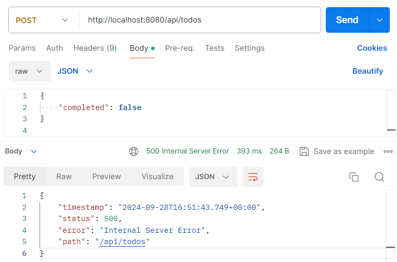

Add validation layer
In the first version of the project, no validation is made to the Todo creation and modification APIs, and we can end up with Todo tasks with no title or description stored in the database. To overcome this problem, we're going to create the validator package, in which we'll add the ITodoValidator interface and its TodoValidator implementation, which will enable us to validate a Todo task:
code-tabs
ITodoValidator
package net.learntime.todo.api.validator; import net.learntime.todo.api.model.Todo; public interface ITodoValidator { void validate(Todo todo); }TodoValidator
package net.learntime.todo.api.validator; import net.learntime.todo.api.exception.TodoBadRequestException; import net.learntime.todo.api.model.Todo; import org.apache.commons.lang3.StringUtils; import org.springframework.stereotype.Service; import java.util.Objects; @Service public class TodoValidator implements ITodoValidator { public void validate(Todo todo) { if (StringUtils.isBlank(todo.getTitle())) { throw new TodoBadRequestException("title is mandatory"); } if (StringUtils.isBlank(todo.getDescription())) { throw new TodoBadRequestException("description is mandatory"); } if (Objects.isNull(todo.getCompleted())) { throw new TodoBadRequestException("completed is mandatory"); } } }
In the TodoValidator class, we used the StringUtils class that we imported from the Apache commons-lang3 library, and here's the modification we made to our project's pom.xml file to be able to use it
<dependency>
<groupId>org.apache.commons</groupId>
<artifactId>commons-lang3</artifactId>
</dependency>
alert-info
The version of this dependency has been inherited, since it is a Spring Boot project.
We also created a new exception TodoBadRequestException in the exception package, which we raised once we had a validation error.
package net.learntime.todo.api.exception;
public class TodoBadRequestException extends RuntimeException {
public TodoBadRequestException(String message) {
super(message);
}
}
To apply this validation, we'll use our validator in our controller:
@RestController
@RequestMapping(path = "/todos")
public class TodoController {
@Autowired
private ITodoValidator validator;
@PostMapping
public Todo create(@RequestBody Todo todo) {
validator.validate(todo);
return repository.save(todo);
}
@PutMapping("{id}")
public Todo update(@PathVariable Long id, @RequestBody Todo todo) {
validator.validate(todo);
var entity = repository.findById(id).orElseThrow(() -> new TodoNotFoundException(id));
entity.setTitle(todo.getTitle());
entity.setDescription(todo.getDescription());
entity.setCompleted(todo.getCompleted());
repository.save(entity);
return entity;
}
}
With this validation layer, we get an error when we try to create or update an invalid Todo task.

Conclusion
We have now integrated a validation layer into our REST API to ensure that each Todo task has a valid title, description and completion status.
However, we have found that our API currently returns a 500 Internal Server Error status during validation, whereas the expected behavior is a 400 Bad Request status with an informative error message.
In the next section, we'll set up Exceptions Handlers to modify the http status and the body of the response returned in the event of an error.
previous-next-sections
Testing our REST API Add exception handlers